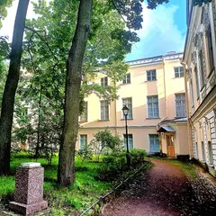

Бар со стендапом · Центр
Синий Пушкин
Бар у Литейного, где по вечерам выступают комики и музыканты: концерт, коктейль и поздний ужин в одном месте.
- ₽ · до 1 500 ₽ на человека
- Круглосуточно
- Новое в каталоге
- в 1 плане
Позвать сюда: Синий ПушкинОткрыть в каталоге: Синий ПушкинМаршрут до места: Синий Пушкин
Адрес и детали
- Адрес
- ул. Жуковского, 3
Открыть на Яндекс Картах (в новой вкладке) - Метро
- м. Маяковская
- Район
- Центр
- Цена
- до 1 500 ₽ на человека
- Проверено
- работает — проверили в октябре 2026
Планы с этим местом 1
- Синий Пушкин · Бар со стендапом · м. Маяковская
Бар у Литейного, где по вечерам выступают комики и музыканты: концерт, коктейль и поздний ужин без переходов.
Открыть план: Комики, коктейль и поздний ужинПозвать сюда: Комики, коктейль и поздний ужин
Похожие рядом
Что ещё рядом
- UnionБар · ≈ 2 минуты пешком

Музей Анны Ахматовой в Фонтанном домеМузей · ≈ 3 минуты пешком- Подписные изданияКнижный магазин · ≈ 4 минуты пешком
- Театр «На Литейном»Театр · ≈ 4 минуты пешком
- Арт-центр «Борей»Галерея · ≈ 4 минуты пешком
- Шереметевский дворец — Музей музыкиМузей · ≈ 5 минут пешком
Как позвать
- Выбери план, место или событие — в карточке адрес, цены и маршрут в Яндекс Картах.
- Нажми «Позвать сюда» — соберётся приглашение-игра для свидания или голосование для компании.
- Отправь ссылку в любой мессенджер: тебе ответят, а компания отметит, куда и когда может. Бесплатно и без регистрации.